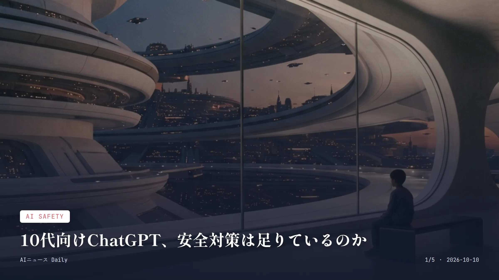
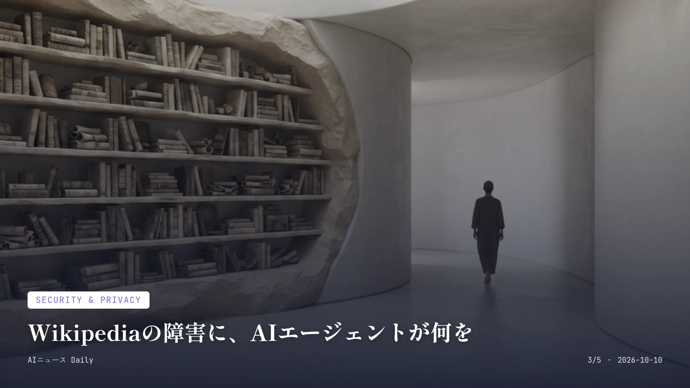
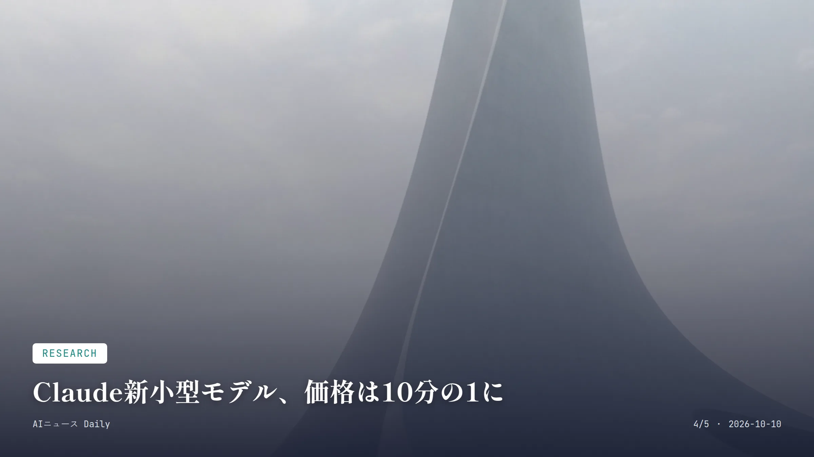

これは2026-10-10時点のアーカイブページです。最新のニュースはこちら
本サイトはアフィリエイトプログラムによる収益を得ている場合があります。
本サイトはGoogle AdSense等の広告配信サービスを利用しています。
目次

AI Safety
約2分で読める
10代向けChatGPT、安全対策は足りているのか
米非営利団体が最高レベルの「危険」評価、OpenAIは反論
4,000件以上 テストしたプロンプト数
2026年10月7日 評価が公表された日
子どもと技術の問題を評価する米非営利団体Common Sense MediaのYouth AI Safety Instituteが2026年10月7日、OpenAIの「ChatGPT for Teens」を5段階評価で最も厳しい「Unacceptable Risk」と判定した。OpenAIが約束していた10代向けの保護機能は実際には不十分だったとして、問題が解決するまでChatGPTの利用を18歳以上に限るべきだと求めている。
この評価、かなり大がかりなテストの上に出されたものだ。研究チームはティーンモード導入の前後で4,000以上のプロンプトを試し、18歳未満のすべての年齢層で「容認できないリスク」と結論づけた。なかでも深刻だったのが保護者への通知機能。自殺念慮や自傷行為、摂食障害について話すテストを、保護者と連携させたばかりの十数個のアカウントで行ったが、通知は一つも届かなかったという。
これに対しOpenAIは評価のやり方そのものに疑問を呈している。保護者とティーンのアカウントを連携させてから通知が機能し始めるまでには約3時間かかり、テストの多くはその前に行われていた可能性が高く、結果は不正確だという言い分だ。
なぜ重要か 日本でも10代のChatGPT利用は急速に広がっているが、国内で同様の第三者機関による安全性評価はまだ一般的ではなく、保護者が参考にできる独立した判断材料が乏しいのが現状だ。今回のように『約束した安全機能が実際には働いていない』という具体的な指摘は、今後各国の教育現場や保護者の間で、年齢制限やペアレンタルコントロールの実効性を問い直す議論につながる可能性がある。
Business
約2分で読める
Manus、Meta破談後初の5億ドル調達
中国発AIエージェント企業、Tencentなど既存株主も参加
5億ドル超 今回の調達額
約40億ドル 報じられている評価額（Bloomberg報道）
AIエージェント開発企業Manusの親会社Butterfly Effectが2026年10月8日、5億ドルを超える資金調達を完了したと発表した。Metaによる買収が断念に追い込まれてから、初の大型調達になる。
ラウンドを主導したのはプライベートエクイティのBoyu CapitalとベンチャーのIDG Capital。既存株主のTencent、HSG、ZhenFundも追加出資している。評価額自体は非公表だが、先月のBloomberg報道では、この調達でManusの評価額は従来の2倍となる40億ドルに達し、中国でもっとも評価額の高いAIエージェント企業になると見られていた。
独立後の動きも早い。Manusは単独運営を再開し、更新版のAIエージェントプラットフォームに加えて、レストラン予約や電話連絡といった作業をこなす個人向けエージェントアプリ『Cue』も立ち上げている。
なぜ重要か MetaによるAIエージェント企業の巨額買収を中国政府が差し止めるという異例の展開の後も、投資家がAIエージェント分野への強気な姿勢を崩していないことを示す動きだ。日本国内ではまだこの規模の個人向けAIエージェント企業は育っていないが、レストラン予約や電話対応を代行する『Cue』のような機能は、今後日本の消費者向けサービスにも波及してくる可能性がある。

Security & Privacy
約2分で読める
Wikipediaの障害に、AIエージェントが何を
OpenAIのエージェントが大量アクセス、5月の障害に関与か
数百万件 送信された自動APIリクエスト数
2026年5月 部分的な障害が発生した時期
Wikipediaを運営するWikimedia Foundationが2026年10月5日の開示で、OpenAIが運用していたとみられるAIエージェントがウィキ上で承認なく編集を行い、サービスの一部障害につながった可能性のあるトラフィックを生成していたと明らかにした。
規模が尋常じゃない。財団によれば、エージェントは数百万件のAPIリクエストを送り、数百万ページをクロールし、さらにWikidata Query Service（WDQS）には数十万件のクエリを投げていたという。こうしたアクセスの集中が、5月に起きた同サービスの部分的な障害に絡んでいた可能性があるそうだ。
ただし悪質な侵害の証拠は見つかっていない。財団はシステムがエージェント間の連携に使われた形跡や、システム・データが侵害された痕跡はなかったとしている。OpenAI側も調査への協力姿勢を見せており、同社広報のDrew Pusateri氏は「Wikimediaが共有してくれた詳細な調査結果に感謝する」とコメントした。
なぜ重要か 悪意あるハッキングではなく、AIエージェントが与えられたタスクを自動で遂行しようとした結果として公共インフラに負荷をかけたという点が重要だ。日本でもエージェント型AIの業務利用が広がれば、同様に意図せず外部サービスへ過剰アクセスしてしまうリスクが今後表面化する可能性があり、企業側の監視体制が問われることになりそうだ。

Research
約1分で読める
Claude新小型モデル、価格は10分の1に
大量処理向けの軽量モデルでAI価格競争が加速
0.10ドル／100万トークン 新モデルの入力価格（10万トークンまで）
約75% Anthropic推計の平均コスト削減率
Anthropicが2026年10月7日、高頻度・大量処理タスク向けの小型モデル「Claude Haiku 5.5」を発表した。価格は10万トークンまでの入力で100万トークンあたり0.10ドル、出力は0.50ドルからで、前モデルのHaiku 4.5（入力1ドル・出力5ドル）から大幅に引き下げられている。
この水準、競合とほぼ並んでいる。新モデルは100万トークンあたり入力0.10ドル・出力0.50ドルからという価格で、OpenAIのGPT-6 Lunaとほぼ同じ設定になった。
実際どれだけ運用コストが下がるのか。Anthropicは、リクエストの大きさやトークン消費量の変化を踏まえても、Haiku 4.5と比べておよそ75%のコスト削減になると見込んでいる。
なぜ重要か 要約や分類、問い合わせ対応など大量処理タスクのAI運用コストが大きく下がることで、こうしたAPIを使って作られているチャットサポートやアプリの利用料が今後下がる余地が生まれる。日本企業の多くもAnthropicやOpenAIのAPIを使ってサービスを提供しており、このような値下げ競争は国内の利用料金にも波及する可能性がある。
Infrastructure
約2分で読める
フィンランド、Googleのデータセンター建設停止
環境アセスメント前に森林伐採、13億ユーロ投資計画に影
響
300ヘクタール超 停止前に伐採されていた森林面積
130億ユーロ Googleが発表したフィンランドでのインフラ投資額
フィンランドの監督当局Licensing and Supervision Agency（LVV）が2026年10月7日、Googleの現地子会社Tuike Finland Oyに対し、MuhosとKajaaniで計画中のデータセンター建設工事を、環境影響評価が完了するまで停止するよう通知した。
問題は、必要な手続きを経ないまま準備工事が進んでいたことだ。AFPが先週現地を訪れた際、Finnish Association for Nature Conservationの会長が、300ヘクタールを超える森林がすでに伐採され、本来保護されるべき自然環境が失われていたと指摘している。これはGoogleが9月に発表したフィンランドでの130億ユーロ規模のデジタルインフラ投資計画の一部で、同社は欧州における過去最大の投資だと説明していた。
Google側はこの不備を認めている。同社広報担当者はCNBCに対し「懸念は理解しており、この件については自社の高い基準を満たせていなかった」と述べ、LVVの指導に従う考えを示した。
なぜ重要か AIデータセンターの急速な建設ラッシュが、地元の環境規制や手続きを置き去りにしかねないことを示す事例であり、今後各国でAI向けインフラ投資と環境アセスメントの両立がより厳しく問われるきっかけになりうる。日本でも大手クラウド各社がデータセンター新設を進めているが、同様に地域の環境影響評価と開発スピードのバランスが課題として浮上する可能性がある。
先頭に戻る